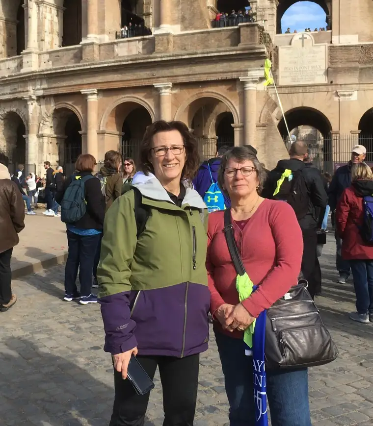
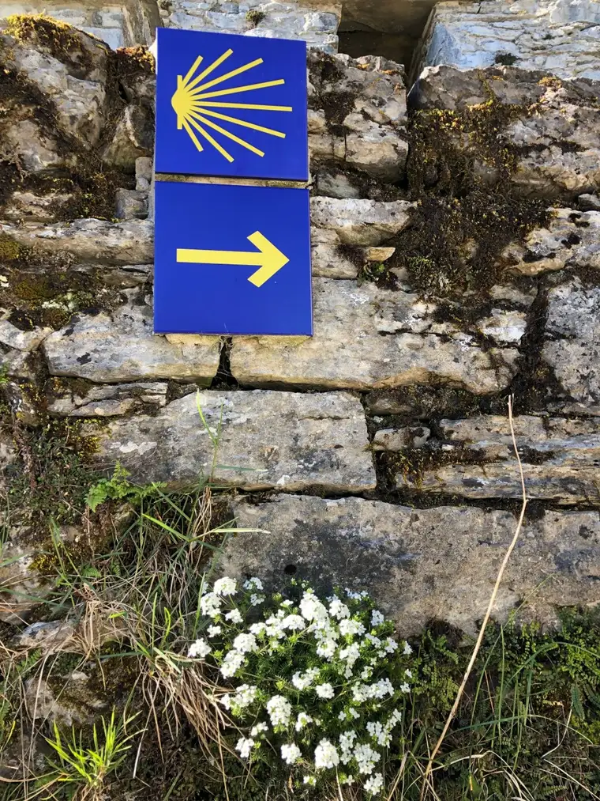

FULLERTON, N.D. — Ruby Gramlow dreams of the day she can shout, “Buen Camino!,” the phrase pilgrims use to greet one another, or when parting, walking El Camino de Santiago; the Way of St. James.
Though the hills of Spain and pathways of France encompassing the long trek of trails leading to what tradition holds are St. James’ relics seem far from North Dakota, in her mind, Gramlow has touched the very trees bordering the paths.

“My husband and I were on vacation out to Medora and happened to sit with a couple at the Pitchfork Fondue. She’d just finished the Camino in Spain,” Gramlow recalls.
Her intrigue growing ever since, by 2025, she hopes to be among the Camino pilgrims, having been on pilgrimage to Italy in the past, and, soon, the Holy Land. “I just decided, ‘I need to put a date on this, too. I need to go.”
Gramlow chose the year based on when one of her sisters, whom she’s been encouraging to join her, will retire, and when she’ll be able to pull away from her own work as a hospice nurse.
For now, her yearnings are tucked away in her “Camino notebook,” filled with advice from other pilgrims, and several Camino Facebook groups. “They give great advice on what you need to pack, when to go, how hot or cool it will be at different times, and what to spray on your things so you won’t get bedbugs; something I wouldn’t have thought about otherwise!”
An historical walk
The Camino dates back to before the 10th Century. Since then, pilgrims have embarked on the quest to reach the Cathedral of Santiago de Compostela in Spain in pursuit of the saint’s remains, often for spiritual reasons, but not always. The paths are frequented by hikers, cyclers, and tour groups, with some routes busier than others.
The 2010 movie, “The Way,” starring Martin Sheen, gives moviegoers a chance to experience the journey through film, as does a recent documentary, “Santiago: The Camino Within.”
Pope Benedict XVI once said about the Camino: “It is a way sown with so many demonstrations of fervor, repentance, hospitality, art and culture which speak to us eloquently of the spiritual roots of the Old Continent.”

Jill Booth, Fargo, doesn’t have to dream about what might be. She’s made the Camino, and hopes to return someday.
“We went in the spring of 2019, so we left on the 30th of April and got back the 15th of May,” she says. “In general, I would say that is the minimum amount of time you would need.”
Her brother and sister-in-law had seen “The Way” several years before, and determined they’d do the Camino someday. “Then my brother-in-law passed away.” The dream was revived, after a friend who’d gone inspired them to return with her.
She’d done the Camino by way of the France route, which takes about 33 days to complete, and suggested the same. As the trip neared, another friend who’d been doing missionary work in Lebanon, and wanted a break, asked to join them.
“She met us in Madrid, so there were four of us,” Booth says, noting that they took the train to Leon, France, and started off walking from there, with planned “walk breaks” along the way. “If you have a slower walker, or someone who has blisters, it’s good to take a day off.”

One day, Booth and another pilgrim, on a break, biked to a castle and spent nearly four hours there. “I’d never left the North American continent before then, so I didn’t care what I saw. It was all cool to me!”
Another day, they found an old cathedral off the beaten path. “It was a little bit in the woods, with lots of weeds,” she says, noting that someone had to unlock the church. The priest who showed up to do Mass was from Haiti, and they learned the church was nearly 600 years old. “It blew my mind. We were like, ‘Yeah, we’re from the United States. Our buildings are not this old.”
If given a second chance, Booth says, she’d do a few things differently, including attending Mass daily, for the experience of worshiping God in different churches. “Also, we focused more on, ‘We gotta walk every step,’ but, no, you really don’t,” she says. “You learn as you go.”
Approaching their final destination, Booth was especially excited to see the famed, giant incense burner, or censer, that swings from one end of the sanctuary to the other, but soon learned the cathedral was under construction.

“However, by the time I got there, I had forgotten it was such a big deal. There was so much else to see and experience,” she says. “The reason why you start walking isn’t what you find out at the end.”
Spiritual fruits
Laura Devick, Fargo, began dreaming of doing the Camino after reading, “A Walk in the Woods,” by Bill Bryson, detailing his adventure along the Appalachian Trail. “It’s a really interesting book. I spit out my coffee a few times reading it,” she says.
An overseas experience at age 20, in 2000, partaking in World Youth Day in Rome, also has influenced her Camino dreams. “There’s the history, the beauty, and maybe the romantic idea of the college student backpacking through Europe,” she says. “Part of the appeal, too, might be a more minimalistic way of life, but also the experience of a true pilgrimage and what that might mean.”

Unlike a typical vacation, Devick says, pilgrimages aren’t always comfortable. “Here in America, we’re really not used to waiting or being too hot or not having enough water….we’re kind of wimps.”
A pilgrimage brings not only physical challenges, she says, but ones that are spiritually fruitful. She recalls a moment in Rome when one of the travelers got separated from the group. As the rest boarded their air-conditioned bus, the priest traveling with them said they’d have to get off and wait for the lost sojourner. “Our challenge was to do that without complaining, and to be patient.”
Devick’s uncle has walked the Camino, too, along with several families she’s known, and a college friend, who brought back for her a small medallion of a shell—the symbol of the Camino, which leads people along the way—along with a Santiago crucifix, “a red, medieval looking cross.”
In contemplating her own possible journey, Devick says she realizes it’s not a race, and there’s no age limit, but there are things to consider, such as whether you’re willing to adjust your pace for others.

“It’s going to be humbling, and yes, I might need to pee in a field,” she says, laughing. “It’s not a glamour tour, and yet you see a lot of beauty, and that can be so paradoxical. You might be sleeping on a stone floor in an ancient hotel, or walking in a church that has been walked on by so many before you.”
Ideally, she’d like to bring her family, which includes her husband, Matt, and six children ages 6 to 19, though realizing it might be a pipedream to have all of them along.
Devick also questions whether her current motivation is strong enough. “I feel like I need to have a better ‘Why.’ I like Europe, I like my family, I like to walk with them. Is that enough?”

Slowing down to listen
At 64, Gramlow knows there are obstacles to confront. “I’ll probably carry more shoes than the average person. I’ve had partial knee replacement, and have some arthritis in my one foot.”
And yet, she’s ready to try, anticipating most of all the alone time and discovering “what God wants me to be,” she says. “Just the slowing down from my day-to-day commitment to listen to his words.”
A pilgrimage, Gramlow adds, can draw us closer to the saints, and people who have walked in those places before, “to reach a higher goal, and be saints ourselves.”
All agree that a pilgrimage ultimately brings travelers back to the beginning, the same but also much changed.
Buen Camino!
[For the sake of having a repository for my newspaper columns and articles, I reprint them here, with permission, a week after their run date. The preceding ran in The Forum newspaper on April 28, 2023.]